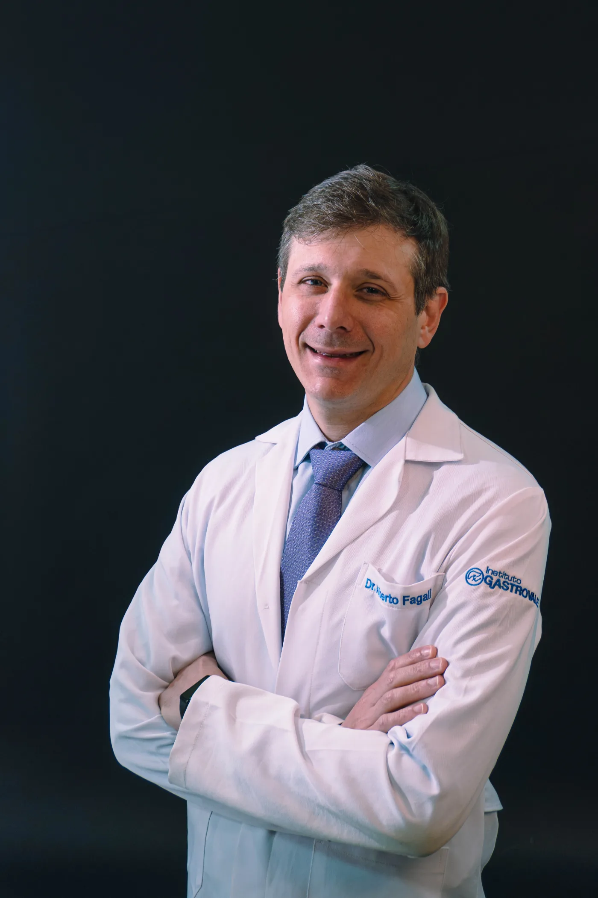

Experiência em cirurgia digestiva e bariátrica
Experiência profissional dedicada ao tratamento cirúrgico das doenças do aparelho digestivo e à cirurgia bariátrica e metabólica, acompanhando o paciente desde a avaliação até o pós-operatório.
Cirurgião do Aparelho Digestivo | Cirurgia Bariátrica e Metabólica
CRM-SP 135.929 | RQE 564531
Cirurgia do aparelho digestivo e cirurgia bariátrica e metabólica, com indicação individualizada, técnicas minimamente invasivas e acompanhamento próximo em todas as etapas do tratamento.
Experiência profissional dedicada ao tratamento cirúrgico das doenças do aparelho digestivo e à cirurgia bariátrica e metabólica, acompanhando o paciente desde a avaliação até o pós-operatório.
Utilização de técnicas videolaparoscópicas e robóticas quando indicadas, buscando menor agressão cirúrgica, recuperação adequada e segurança em cada procedimento.
Cada paciente é avaliado de forma individual. A escolha do tratamento considera sua história clínica, exames, características anatômicas, expectativas e necessidades, com acompanhamento próximo antes e depois da cirurgia.

Cirurgia do Aparelho Digestivo com atuação em Cirurgia Bariátrica e Metabólica
O Dr. Alberto Fagali é Cirurgião do Aparelho Digestivo, com atuação em cirurgia bariátrica e metabólica e cirurgia minimamente invasiva.
Formado pela Universidade de Alfenas (UNIFENAS), com especialização em Cirurgia do Aparelho Digestivo pela Universidade Federal de São Paulo (UNIFESP – Escola Paulista de Medicina).
É membro titular do Colégio Brasileiro de Cirurgia Digestiva (CBCD) e da Sociedade Brasileira de Cirurgia Bariátrica e Metabólica (SBCBM).
Dedica sua prática ao tratamento cirúrgico das doenças do aparelho digestivo, com atuação em doenças do esôfago, estômago, intestino, vesícula e vias biliares, hérnias e cirurgia bariátrica e metabólica.
Também atua com técnicas minimamente invasivas, incluindo videolaparoscopia e cirurgia robótica, sempre considerando a indicação adequada para cada paciente.
A cirurgia bariátrica e metabólica é uma das principais áreas de atuação do Dr. Alberto Fagali.
Mais do que a realização de uma cirurgia, o tratamento envolve avaliação individualizada, definição da técnica mais adequada e acompanhamento em todas as etapas.
A indicação considera as características clínicas e metabólicas de cada paciente, seus exames, histórico de tratamentos, condições associadas à obesidade e aspectos relacionados à cirurgia.
Não existe uma única técnica ideal para todos os pacientes. A escolha entre as diferentes opções deve ser individualizada e discutida durante a avaliação médica.
O refluxo gastroesofágico e a hérnia de hiato podem apresentar diferentes causas, características e graus de gravidade.
Quando o tratamento clínico não é suficiente ou existem condições específicas que favorecem a indicação cirúrgica, o paciente deve ser submetido a uma avaliação individualizada.
A cirurgia pode ser realizada por técnicas minimamente invasivas, de acordo com as características de cada caso.
A avaliação pré-operatória é fundamental para definir a indicação e a técnica mais adequada.
Depoimentos espontâneos, publicados diretamente na ficha do Google do consultório.
Espaço reservado para o depoimento importado da ficha do Google.
Paciente · Google Reviews
Espaço reservado para o depoimento importado da ficha do Google.
Paciente · Google Reviews
Espaço reservado para o depoimento importado da ficha do Google.
Paciente · Google Reviews
Consulte a secretaria para confirmar a cobertura do seu plano e os procedimentos autorizados.
Preencha os dados ao lado. A mensagem é aberta no WhatsApp já preenchida, e o retorno acontece no horário de funcionamento da secretaria.
Em caso de urgência, procure atendimento presencial em pronto-socorro.